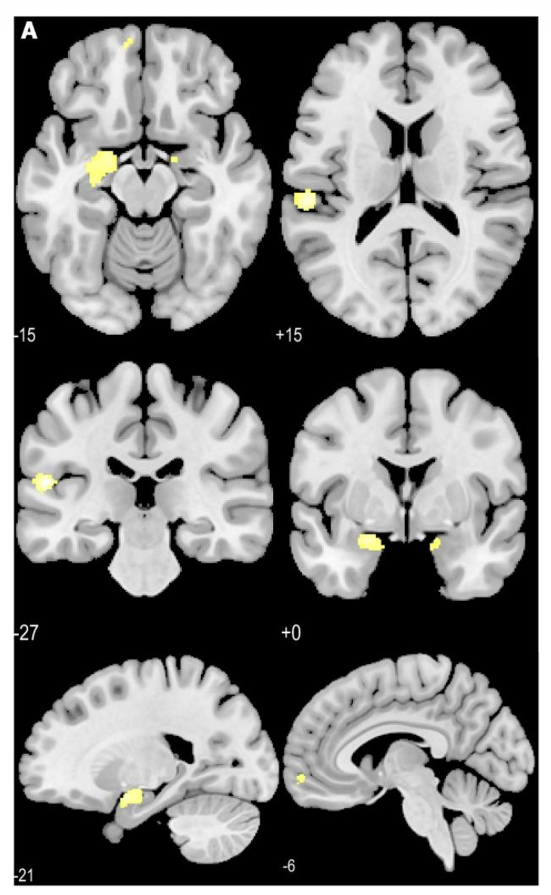
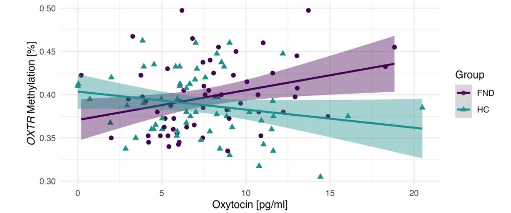
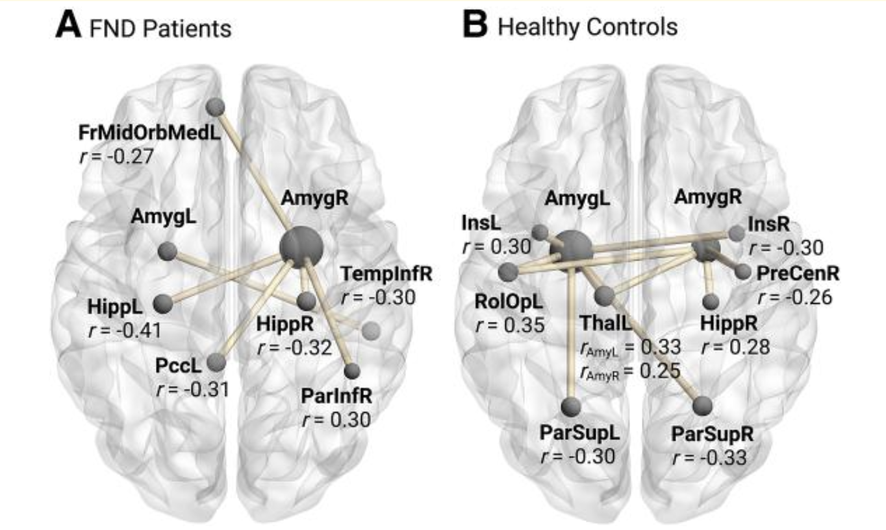
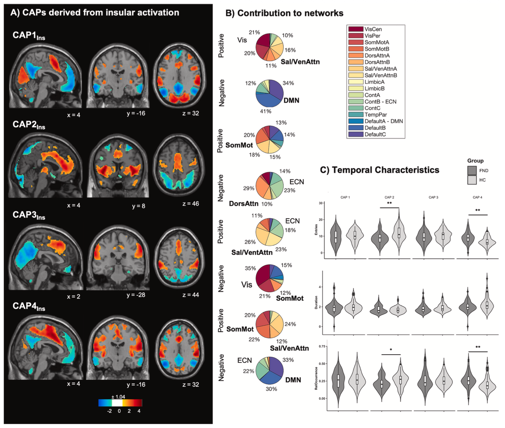
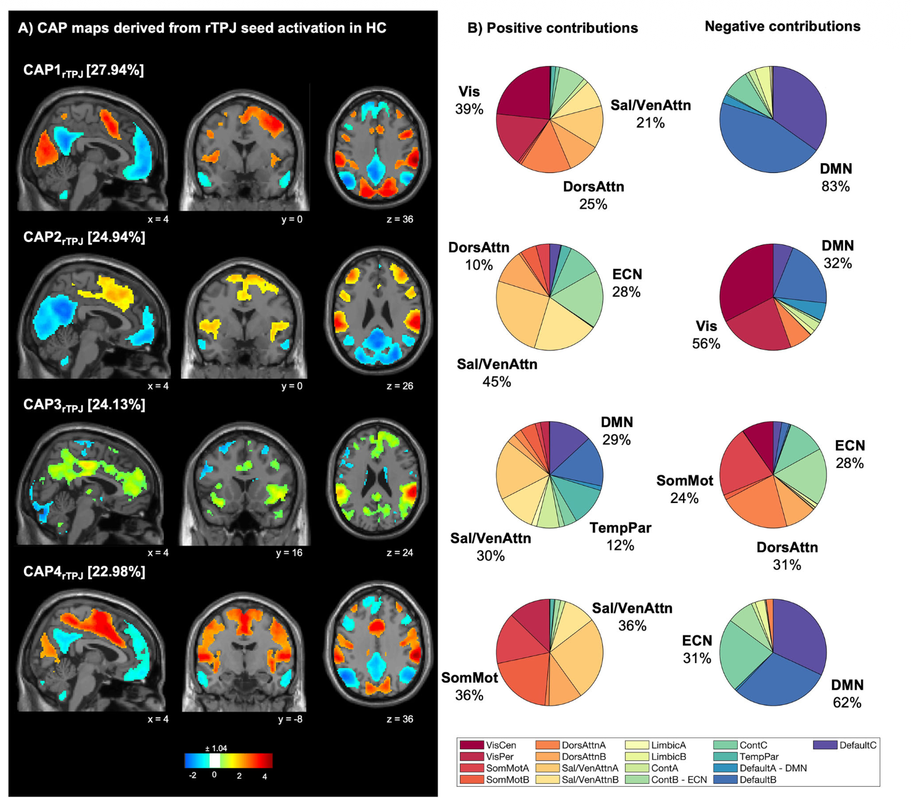

Featured Project 03
Biopsychosocial Biomarkers in FND
This project brings together the central work of my PhD and follows a simple but unresolved question: how can the brain produce real neurological symptoms without structural damage?
1. Why This Project Mattered
The history of functional neurological disorder is also a history of neglect. For centuries, patients were interpreted through theories of hysteria, moral judgment, or a rigid split between mind and body. Even after neurology and psychiatry developed into separate disciplines, FND often remained stranded between them. That historical legacy still matters because many patients continue to face disbelief, delayed diagnosis, and the implicit suggestion that a missing lesion means a missing biology.
Working with these patients made this project personally important. The aim was never to reduce FND to a single marker or to force it into an outdated either-or between neurology and psychiatry. Instead, this project approached FND as a biopsychosocial disorder shaped by biological vulnerability, stress regulation, and dynamic brain network dysfunction.
2. The Project Logic
The storyline of the project moved from detection to mechanism. First, I asked whether FND can be detected in the brain at all. Then I asked what kind of disorder it is: a static abnormality, a stress-related vulnerability, or a disorder of dynamic network regulation. Resting-state fMRI became central because it allowed the study of intrinsic brain organization without imposing a task, while structural imaging and psychobiological markers helped place those brain findings in a broader stress-diathesis framework.
- Step 1: show that FND has measurable brain-based signatures rather than being dismissed as “nothing.”
- Step 2: identify trait-level vulnerability using structural imaging and stress-related biology.
- Step 3: link neuroendocrine systems and limbic function rather than treating stress biology as something separate from the brain.
- Step 4: move from static connectivity to brain dynamics, flexibility, and state transitions.
- Step 5: ask whether these markers are only explanatory or also clinically informative.


Recognition
This body of work was recognized with the 2023 Best Paper Award from the Foundation for Research in Parkinson and Movement Disorders and the 2022 Best PhD Thesis Award from the University of Bern.

3. Key Findings
Across the project, the findings converged on one message: FND is neither purely psychological nor purely neurological. The emerging picture is a multi-level disorder in which biological vulnerability, stress regulation, and altered brain network dynamics interact to shape symptom expression.
4. Dynamic Brain States, Not Static Lesions
Three of the core papers use co-activation pattern analysis. That matters because static averages can miss the transient brain states that may be especially relevant in FND. Co-activation patterns let us study how large-scale systems briefly assemble and reassemble over time, which is a better fit for a disorder marked by fluctuating symptoms, altered salience processing, and state-like changes in control and self-agency.


The transient resting-state salience-limbic paper, the locus coeruleus co-activation work, and the altered brain network dynamics paper collectively point toward FND as a disorder of abnormal network persistence, switching, and coordination rather than a single damaged region. In other words, this work argues for understanding FND through fluctuating brain states and salience dynamics. That shift, from static abnormalities to dynamic dysfunction, is the main conceptual contribution of the project.
5. Selected Papers in This Subproject
- BOLD signal variability
- Multi-centre classification of FND based on resting-state functional connectivity
- Identification of biopsychological trait markers in FND
- Locus coeruleus co-activation patterns at rest
- Transient resting-state salience-limbic co-activation patterns in FND
- Altered brain network dynamics in motor FND
- Salivary oxytocin and amygdalar alterations in FND